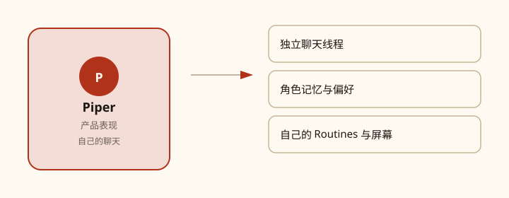
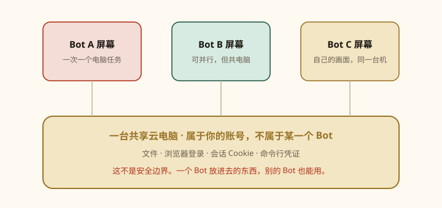

第 01 课
不是聊天窗口，是能上班的同事
先改掉预期：你不是在找更会说话的对话框，你是在入职一位能点浏览器、改文件、做完再汇报的同事。

在文档和 App 里，Bot 就是一个持久、有名字的 agent——一位 AI 同事。你用发消息的方式把活交给它：任务、上下文、需要用到的工具或文件。它可以跨多个系统和网站把事做完，只在需要你拍板时回来。
先记住这一句
Grok Bot 不是 grok.com 的聊天窗口。它是 macOS / Windows 桌面 App（加 iOS 伴侣），背后有一台一直开着的云电脑。
它和普通聊天差在哪
- 它有自己的电脑。 持久云虚拟机，带浏览器、文件系统、终端。有连接器就用连接器；没有干净 API 的网站，就用电脑操作把活做完——不是只给你一份草稿。
- 上手极短。 创建一个 Bot，发消息，需要时再授权。不用先画工作流。桌面和 iOS 看到的是同一批 Bot。
- Bot 之间能自己协作。 多个 Bot 共用一台按你账号分配的电脑，可以并行。它们能互相传话、进群聊、交接所有权，你不必当路由器。
- 能跟做一遍再记住流程。 让 Bot 跟着走一遍跨系统路径，存成 Skill，再按日程或事件跑 Routine。
- 有名字、有状态。 记忆、文件、浏览器会话、偏好会留下来。不是每次任务都从空白房间开始。
所有 Bot 共用一台电脑

文件、浏览器会话、应用登录都在这台电脑上共享，所以交接时不用重复登录。电脑隔离的是你的账号，不是某一个 Bot。某个 Bot 放进去的登录或文件，默认对你账号下其他 Bot 可见。每个 Bot 有自己的屏幕，可以并行用浏览器和桌面工具，但那只是工作面，不是安全边界。同一屏幕上，一个 Bot 一次只能跑一个电脑操作任务。
你决定，它执行
官方给过一个像样的交接例子，结构是：做什么、去哪做、上下文从哪来、成品长什么样、何时交给你。
官方结构示例（可改成你的工具）
从 Salesforce 拉取本周 Strategic Prospects PG List。已经在 sequence 里的人跳过。对前 5 个账号，结合网页、Slack、Databricks 和 Sumble 做研究，找出联系人，按我的语气起草 LinkedIn 和邮件，明早前把草稿留给我审批。
你审结果、纠正偏好，再把稳定流程存成 Skill 或 Routine。下一课先把 App 装上；再下一课发出你的第一条五件套任务。